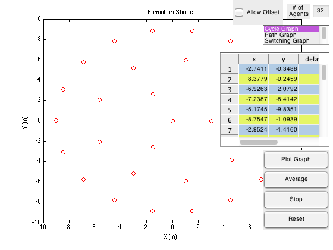

clc; clear all; close all;
figure_h = figure;
n=32;
dim = n;
X = Nbots(n);
I = X(:,6);
uicontrol('Style','text',...
'units','normalized',...
'position',[0.86 0.925 0.07 0.06],...
'String','# of Agents');
switch_text_h = uicontrol('Style','text',...
'visible', 'off',...
'units','normalized',...
'position',[0.58 0.87 0.2 0.03],...
'String','# of Switching Graphs');
for i=1:n
for j=1:5
tabledata(i,j) = X(i,j);
end
end
tabledata_h = uitable('visible', 'off',...
'data', tabledata);
break_h = uitable('visible', 'off');
A_h = uitable('visible', 'off');
H_h = uitable('visible', 'off');
switch_h = uicontrol('style', 'edit',...
'visible', 'off',...
'units', 'normalized',...
'position', [0.673 0.815 0.05 0.05]);
table_h = uitable('units', 'normalized',...
'position', [0.66 0.41 0.33 0.38],...
'columnname', {'x', 'y', 'delay'},...
'columnwidth', {50 50 50 50},...
'columneditable', [true, true, true],...
'data', get(tabledata_h,'data'),...
'backgroundcolor', [0.7 0.8 0.9; 0.9 0.9608 0.4]);
offset_h = uicontrol('style', 'checkbox',...
'units', 'normalized',...
'string', 'Allow Offset',...
'position', [0.7 0.9 0.15 0.1],...
'callback', {@offset_input, tabledata_h, table_h});
list_h = uicontrol('style', 'listbox',...
'units','normalized',...
'position', [0.79 0.82 0.2 0.08],...
'string', {'Cycle Graph'; 'Path Graph'; 'Switching Graph'; 'Custom'},...
'callback',{@operations, A_h, table_h, switch_h, switch_text_h, offset_h});
network_size_h = uicontrol('style', 'edit',...
'units', 'normalized',...
'position', [0.94 0.93 0.05 0.05],...
'string', dim,...
'callback', {@dim_table,table_h,offset_h});
plot_h = uicontrol('style', 'pushbutton',...
'string', 'Plot Graph',...
'units', 'normalized',...
'position', [0.79 0.32 0.2 0.08],...
'callback', {@plotting, table_h, A_h, list_h, network_size_h});
avg_h = uicontrol('style', 'pushbutton',...
'string', 'Average',...
'units', 'normalized',...
'position', [0.79 0.24 0.2 0.08],...
'callback', {@collectiveavg, table_h, A_h, H_h, list_h, break_h, switch_h, offset_h, network_size_h,n});
reset_h = uicontrol('style', 'pushbutton',...
'string', 'Reset',...
'units', 'normalized',...
'position', [0.79 0.08 0.2 0.08],...
'callback', {@reset_data, table_h, tabledata_h, network_size_h, offset_h});
stop_h = uicontrol('style', 'pushbutton',...
'string', 'Stop',...
'units', 'normalized',...
'position', [0.79 0.16 0.2 0.08],...
'callback', {@stop, break_h});
